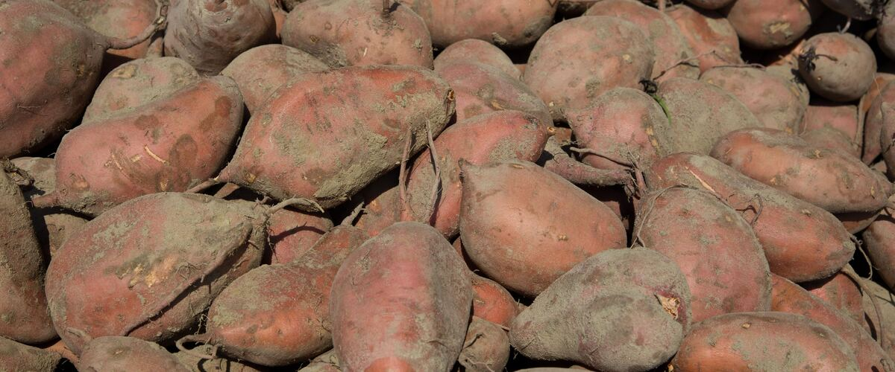

Oregon · Washington · Idaho
When to plant sweet potatoes
Plant in the garden: Portland and Seattle May 25 – Jun 15; Spokane May 30 – Jun 20; Boise May 10–31; Bend Jun 16 – Jul 7.
Your dates in
Sweet potatoes are a tropical vine in the morning glory family, grown for sweet, starchy roots, and they're no relation to regular potatoes. They're planted as rooted cuttings called slips, and freshly dug roots need about a week of curing in a warm spot before they turn sweet. The young leaves are edible cooked.
Puts sweet potatoes on your free plan, with dates for your town and a spot in your beds.
- Difficulty
- Tricky here
- Sun
- Full sun; the hottest spot you have
- Spacing
- 12 to 18 inches apart in a raised row
- Planting depth
- Bury slips up to the top few leaves
- Frost
- Killed by frost
- First harvest
- About 100 days after planting
Easy in hot eastern valleys, a gamble west of the Cascades. Wait for warm soil, use black plastic mulch and choose a short-season variety like Georgia Jet.
Sweet potato planting dates
| Towns | Plant in the garden |
|---|---|
| Portland, OR, Seattle and Tacoma, WA | May 25 – Jun 15 |
| Spokane, WA | May 30 – Jun 20 |
| Boise and Meridian, ID | May 10–31 |
| Bend and Redmond, OR | Jun 16 – Jul 7 |
| Astoria, OR | Jun 1–22 |
Dates for six main towns. For any of the other 110 towns, type it in the box at the top of the page or browse all towns.
| Gresham, OR, Hillsboro and Beaverton, OR, Oregon City and West Linn, OR, Portland, OR, St. Helens and Scappoose, OR, Wilsonville and Canby, OR | May 25 – Jun 15 |
|---|
| Corvallis and Albany, OR, Cottage Grove, OR, Eugene, OR, McMinnville and Newberg, OR, Oakridge, OR, Salem, OR | May 25 – Jun 15 |
|---|
| Ashland and Talent, OR, Cave Junction, OR, Grants Pass, OR, Medford, OR, Roseburg, OR | May 25 – Jun 15 |
|---|
| Astoria, OR, Brookings and Gold Beach, OR, Coos Bay and North Bend, OR, Florence, OR, Newport and Lincoln City, OR, Port Orford, OR, Tillamook, OR | Jun 1–22 |
|---|
| Bend and Redmond, OR, Klamath Falls, OR | Jun 16 – Jul 7 |
|---|---|
| Burns, OR | Jun 18 – Jul 9 |
| Lakeview, OR | Jun 11 – Jul 2 |
| Madras, OR | Jun 5–26 |
| Prineville, OR | Jun 8–29 |
| Baker City, OR, Condon, OR, Enterprise and Joseph, OR, John Day, OR | Jun 5–26 |
|---|---|
| Heppner, OR, Hermiston, OR, Hood River, OR, Ontario, OR, Pendleton, OR, The Dalles, OR | May 10–31 |
| La Grande, OR | May 30 – Jun 20 |
| Bremerton and Port Orchard, WA, Everett, WA, Kent, Renton and Auburn, WA, Olympia, WA, Seattle and Tacoma, WA, Shelton, WA | May 25 – Jun 15 |
|---|
| Anacortes, WA, Bellingham, WA, Blaine, WA, Friday Harbor and the San Juans, WA, Mount Vernon and Burlington, WA, Oak Harbor and Whidbey Island, WA | May 25 – Jun 15 |
|---|
| Aberdeen and Hoquiam, WA, Forks, WA, Long Beach and Ilwaco, WA, Raymond, WA | Jun 1–22 |
|---|---|
| Port Angeles, WA, Port Townsend, WA, Sequim, WA | May 25 – Jun 15 |
| Centralia and Chehalis, WA, Longview and Kelso, WA, Vancouver, WA | May 25 – Jun 15 |
|---|
| Chelan, WA, Wenatchee, WA | May 10–31 |
|---|---|
| Leavenworth, WA, Omak and Okanogan, WA, Winthrop and Twisp, WA | May 30 – Jun 20 |
| Republic, WA | Jun 6–27 |
| Cle Elum, WA, Ellensburg, WA, Goldendale, WA | May 30 – Jun 20 |
|---|---|
| Dayton, WA, Ephrata and Quincy, WA, Moses Lake, WA, Pomeroy, WA, Sunnyside, Grandview and Prosser, WA, Tri-Cities (Pasco, Kennewick, Richland), WA, Walla Walla, WA | May 10–31 |
| Yakima, WA | May 15 – Jun 5 |
| Chewelah, WA, Colville, WA, Deer Park, WA, Newport, WA, Pullman, WA, Ritzville, WA, Spokane, WA | May 30 – Jun 20 |
|---|---|
| Davenport, WA | Jun 13 – Jul 4 |
| Bonners Ferry, ID, Coeur d'Alene and Post Falls, ID, Kellogg, ID, Sandpoint, ID, St. Maries, ID, Wallace, ID | May 30 – Jun 20 |
|---|
| Grangeville, ID, Moscow, ID | May 30 – Jun 20 |
|---|---|
| Lewiston, ID | May 10–31 |
| Boise and Meridian, ID, Emmett, ID, Nampa and Caldwell, ID | May 10–31 |
|---|---|
| Cascade, ID | Jun 6–27 |
| McCall, ID | Jun 29 – Jul 20 |
| Arco, ID, Ashton, ID, Challis, ID, Salmon, ID | Jun 5–26 |
|---|---|
| Blackfoot, ID, Burley and Rupert, ID, Glenns Ferry, ID, Idaho Falls, ID, Malad City, ID, Pocatello, ID, Preston, ID, Rexburg, ID, Twin Falls, ID | May 30 – Jun 20 |
| Driggs, ID | Jun 20 – Jul 11 |
Sweet potato year at a glance
| Task | J | F | M | A | M | J | J | A | S | O | N | D |
|---|---|---|---|---|---|---|---|---|---|---|---|---|
| Plant | May | Jun | ||||||||||
| Harvest | Sep | Oct |
Around Portland. Colder towns, especially east of the Cascades, run a few weeks later; the table above has your town's planting dates.
How to grow sweet potatoes
- Pick a sunny spot with soil that drains well, and mix in an inch or two of compost.
- Plant sweet potato slips on your town's dates, 12 to 18 inches apart in a raised row. Bury slips up to the top few leaves.
- Water well for the first two weeks, then only in dry spells: too much water and fertilizer grow vines instead of roots. Black plastic mulch keeps the soil warm all summer.
- Harvest: Dig before soil temperatures drop below about 55°F in early fall, and before frost. Cure the roots somewhere warm and humid for a week or two, then store them at room temperature, never in the fridge.
Growing sweet potatoes in your part of the Northwest
The same plant behaves differently on the wet west side, the foggy coast and the dry, colder east side.
West-side valleys
Willamette Valley, Puget Sound, southern Oregon
Sweet potatoes are a challenge but possible with black plastic, a short-season variety like Georgia Jet or Beauregard, and planting in early June.
Coast
Oregon and Washington coast
Coastal summers are usually too cool for sweet potatoes outdoors. A greenhouse is needed.
East of the Cascades
Columbia Basin, Yakima, Boise, Spokane, north Idaho
The hot east-side valleys can grow good sweet potatoes. Plant slips in late May into warm soil and dig before the soil cools in fall.
High desert and mountain towns
Central Oregon, high eastern Oregon valleys, McCall, Salmon
Cold nights and the short season make sweet potatoes very hard to grow here.
More sweet potato varieties
More widely sold picks that do well somewhere in the Northwest. The tag says which part of the Northwest suits each one best.
Georgia Jet
One of the fastest sweet potatoes, producing big, moist orange roots in a short, cool season. The best bet for west-side gardens.
West side
Covington
Smooth, uniform roots with sweet orange flesh that bakes beautifully. It yields well in hot summers and stores for months after curing.
East side
Beauregard
The most widely grown sweet potato in the U.S., with heavy yields of sweet, moist roots. Best where summers are reliably hot.
East side
Murasaki
A Japanese-type sweet potato with purple skin and dry, nutty, chestnut-sweet white flesh. It needs a warm, long summer to size up.
East side
How much to grow
How many to plant
For a family of four, about 10 to 20 slips (rooted shoots).
What to expect
About 1 to 2 pounds per plant west of the Cascades.
Storing the harvest
Cure in a warm, humid spot for a week or two, then store at 55 to 60°F. They keep for months; never refrigerate.
What to plant after sweet potatoes
Around Portland, the sweet potato harvest wraps up around October. These crops can still go into the same bed, and they come from a different plant family, which helps with rotation.
Portland dates. Pick your town at the top of the page for yours.
Key numbers
- Above 65°FSoil to plant
- 90–120Days to harvest
- 1–2 weeks at 80–85°FCuring
- Cool summersBiggest risk
Top care tip: After the first two weeks, water only in dry spells and skip the fertilizer, so plants grow roots instead of vines.
Growing notes
What makes the difference in Northwest gardens, in plain language.
Can you grow them here?
Sweet potatoes are a tropical crop, and they grow roots only when soil and nights are warm. The hot valleys east of the Cascades grow good crops without much fuss. West of the Cascades and on the coast, harvests are smaller and less certain, but a short-season variety in the warmest spot you have, on black plastic, often gives a worthwhile crop in a warm summer.
Slips and planting
Sweet potatoes are grown from slips, rooted shoots sprouted from a stored root. Buy them from a nursery or mail-order supplier in spring, or sprout your own from a store-bought root about two months ahead. Plant them deep in loose, raised rows once the soil is truly warm, usually a week or two after tomato planting. Water well for the first two weeks, then water less; too much water and nitrogen give you lush vines and small roots.
Harvest, curing and storage
Dig carefully with a fork before the soil cools in early fall, since cold soil damages the roots. Freshly dug sweet potatoes are starchy and bland. Curing them somewhere warm and humid (around 80 to 85°F) for one to two weeks heals skin wounds and turns starch to sugar. Store them at about 55 to 60°F. The fridge gives them a hard core and an off taste.
Good neighbors and crop rotation
Good neighbors
- Bush beans. Low plants that don't shade the vines.
Morning glory family: Sweet potatoes have no relatives among common vegetables, so they fit anywhere in a rotation. Give them a new spot each year anyway, ideally the warmest bed you have.
Pests and problems
What most often goes wrong with sweet potatoes in Northwest gardens, how to spot it and what to do.
Cool soil
Signs: Slips sit still for weeks.
What to do: Lay black plastic a week before planting and plant in the warmest bed.
Voles
Signs: Tunnels and chewed roots.
What to do: Dig promptly when soil cools, and trap voles if they're active.
Common questions about growing sweet potatoes
When should I plant sweet potatoes in Oregon, Washington and Idaho?
Plant in the garden: May 25 – Jun 15 in Portland and Seattle, May 30 – Jun 20 in Spokane, May 10–31 in Boise and Jun 16 – Jul 7 in Bend. Pick your town at the top of the page for your own dates.
Can I grow sweet potatoes in Portland or Seattle?
Yes, in a warm summer with the right variety. Use a short-season type like Georgia Jet, black plastic mulch and your sunniest spot, and expect a smaller crop than east of the Cascades.
Can I plant a sweet potato from the store?
Not directly. Sprout it in water or damp soil to grow slips, then plant the rooted slips. Store roots are sometimes treated to stop sprouting, so organic ones work best.
Why are my sweet potatoes not sweet?
They need curing. Keep them warm and humid for a week or two, then wait a few more weeks in storage; the flavor keeps improving.
See what else to plant in May or June.